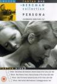
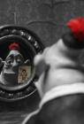
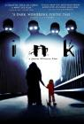
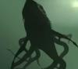
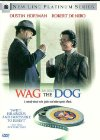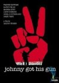
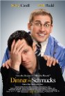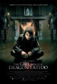
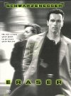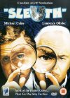
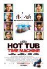
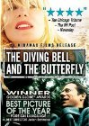
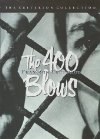
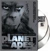
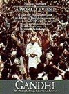


 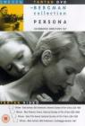
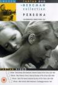 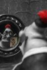
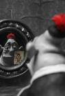


 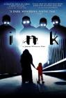
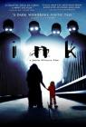


 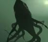
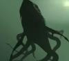 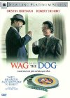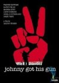
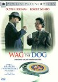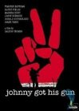


, but I was hoping to see more Bruce Willis.")


watch it before I could really say I'd seen the whole IMDb list. I'm sure I had seen at least some scenes before, but others I'm not sure if the familiarity is from having seen the movie or from when I read the book in 8th grade.")


 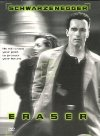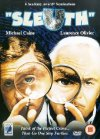
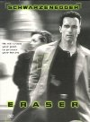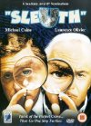


 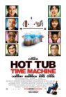
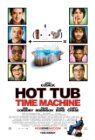


 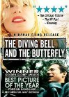
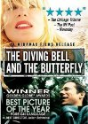 DBZ they didn't use the original Japanese music. Also they had a tendancy to cast too many characters with cowboy voices, like Android 13 in this. I think the English voice acting actually was done in Texas before they changed production companies.
This was average compared to the other DBZ movies I've seen. I do have a memory of Dan very amused to show me a clip of this while we were at a summer computer camp. It was of the part where Android 13 catches Goku and punches him in the nuts so hard he gets knocked out of Super Saiyan. And then the part where Goku is getting beat so badly he doesn't even get to fall to the ground between attacks.") 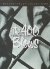
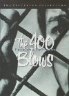


 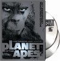
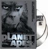


 Days of Summer - Fun movie that does a great job of mixing many different styles. It has for me some of the same appeal of Eternal Sunshine of the Spotless Mind. I like the wise little sister. The list of her traits he loves later paired with the same list that he hates. The black & white \"love documentary\" parts. I like Joseph Gordon-Levitt and Zooey Deschanel, but to me she will always be Dorthy from the high-potential, low-results mini-series Tin Man.
<br>
Also, it seems like I like any decent movie with the Manic Pixie Dream Girl archetype.")
 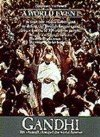
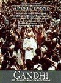 of this with Nick and Brett we were in disagreement: I disliked this much more than The Wicker Man, and they took the opposite position. I think I should clarify: The Wicker Man is probably actually a worse movie. Its appeal to me was that it had so many moments that just completely made no sense and character actions that had no reason or explanation. That made it so bad it was funny, but Battlefield Earth is to me just run-of-the-mill bad which was leaving me quite bored. Perhaps it's a pointless delineation as I was actually falling asleep during both.")